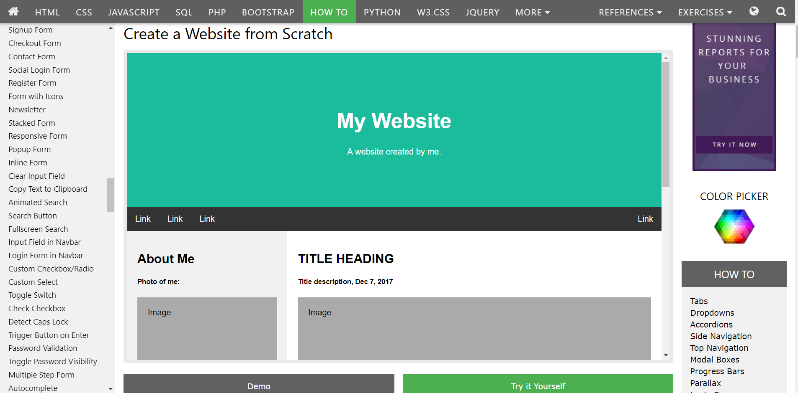
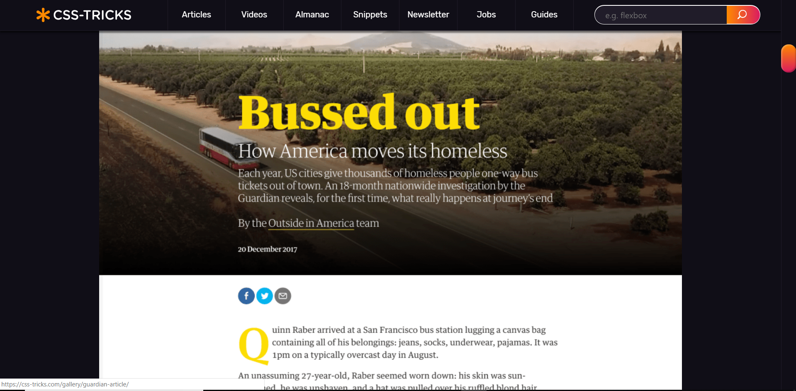
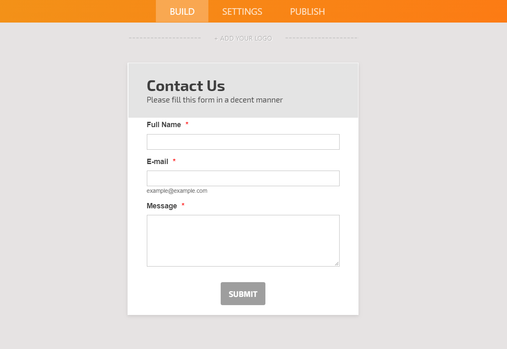
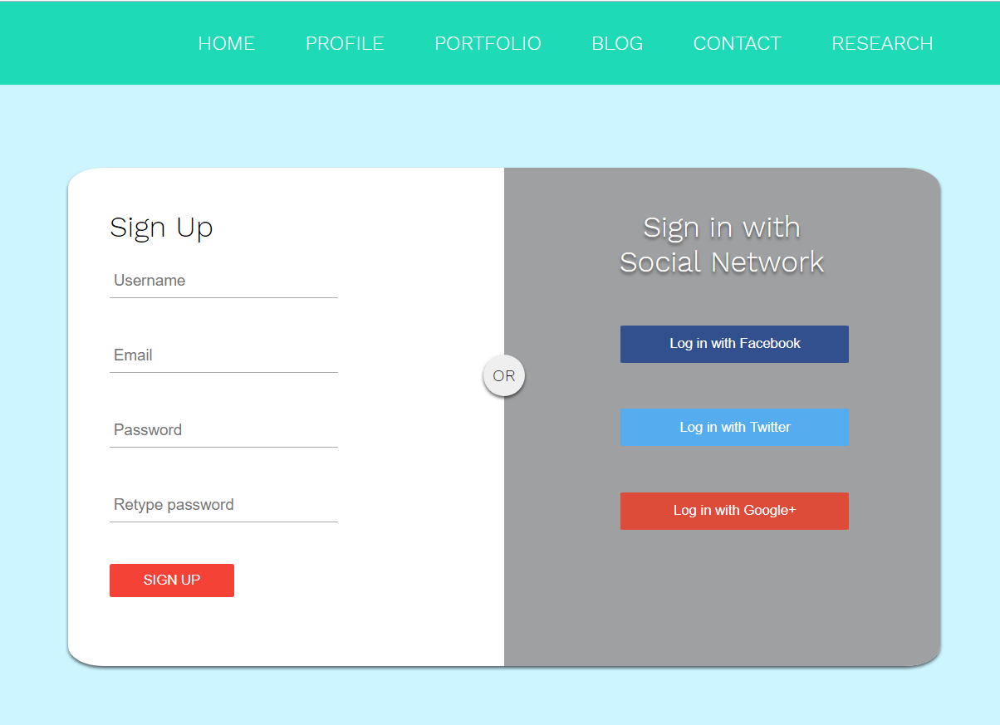
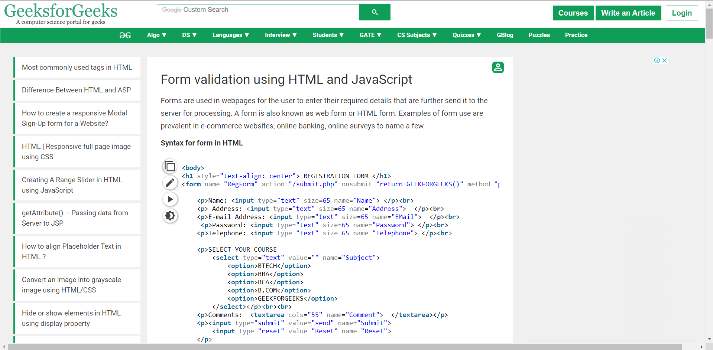
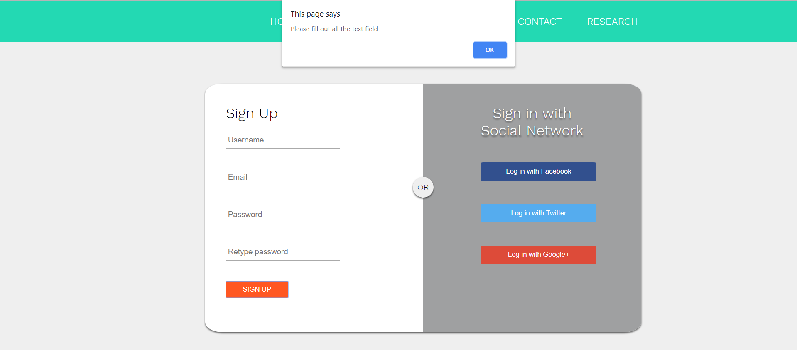
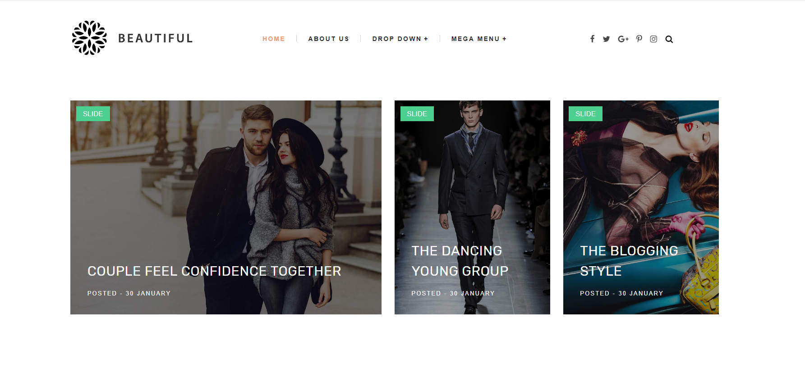
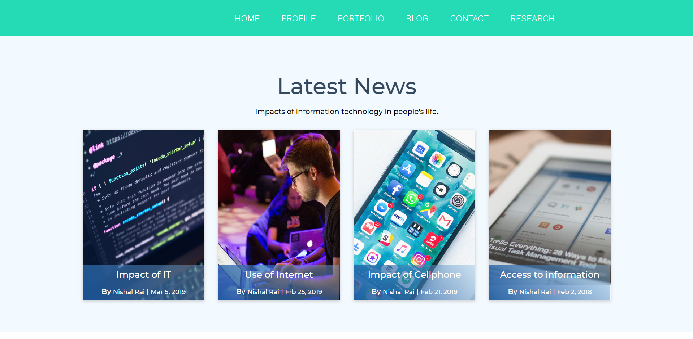

Research is one of the important aspects during the development of any kind of projects, in order to achieve the excellence without tackling severe challenges and complications. A lot of study and extensive research on the relevant topics related to the website development.In the beginning phase of the project, it was quite difficult to get through all those bulk codes and concepts. All those constant effort and past experience from the other projects helped a lot in the journey of these hardship.
After many hours of patience and hard-work has really paid off the achievement with an expected website as my portfolio which was assigned by the college as an individual task. During my research and development, these are some of the reliable sources which was very handful in my projects and listed below:
1. Home

W3schools.com
In the beginnig of the coursework, I was totally confused and anxious about the template along with the design to be used in the website. After surfying through plenty of websites and online tutorials videos in order to meet the expected design for my coursework. I came to know about the W3school.com which was a great platform and the source of information to learn the basic design templates and codes to build a website. I learned all the necessary fundamental tags such as div, nav, span, article, section, img, figcaption, form, input, label, meta, button, video tags and many others from the W3schools.com along with their specific properties and function in the webpage. The website provides reliable exerises and methods to practise all the tags enlisted, in the best possbile way. All these fundamental tags has been used in all the webpages of the website. It was very much helpful to apply CSS to all those well-organized tags in the each and every webpage of the website during the development process.
2. Gallery

CSStricks.com
After the accomplishment of Homepage of my website, the real deal was my Portfolio for the website. I had no clue about the basic templates for my Portfolio page. However, when I came across the csstricks.com website. It made this thing possible without much difficulty instead in a fun way. All the insane CSS properties such as box-shadow, padding, margin, backgroud-blend-mode, display, hover, position, Z-index, border-radius and many others along with their function and best example made my learning very easy. I had never imagined such broad application and impact oh the looks of the website by CSS alone. All those learned CSS properties are in the very way possible in every webpages of my website and learned a lot more in my project development process. In my opinion, csstricks.com is one of the most reliable and vast collection of information related to CSS which are very essential for the web development. Moreover, all those detailed uses of each and every property of css helped a lot for my project. Among all of them, it is a open source website which can be used by any learners.
3. Form

jotform.com
One of the essential part of my website, was the form page. In my early classes of HTML in the college, I had learned some of the basic tag and functioning of the form tag in the website but it wasn’t enough without the proper use of more tags and properties to be implemented to outcome more reliable form page. The need of this knowledge was filled by W3schools.com which gave up all the necessary knowledge and information required to build up a better form page for my website. But, I had no idea about the templates to be used to build up a form page which lead me to this website jotform.com where I found a suitable form page for my webpage. However, I need to upgrade more to fit my needs so several changes were made keeping the reference of the above mentioned website. For an example, I changed the border radius then divided the whole container into two equal size then used some color combination along with shadow effects on the container body. Similarly, the container of one side consists of input text field while the other consist of social media buttons. The final look of my required form webpage is:

Form page
4. Javascript

GeeksforGeeks.com
It was not enough to build up a responsive website, with the use of HTML and CSS only. Javascript plays a significant role in the responsive website and also a key aspect to be included in the project. However, Javascript was a new programming language for me and it was quite difficult to deal with in my early phases. Tons of websites and online tutorials gave some of the essential key concepts of javascript where www.geeksforgeeks.org was best among them. With such clear instruction and simple codes implemented in the website really impressed me. It would not be possible without those knowledge gained from geeksfirgeeks.org. I had use JavaScript in some of the few webpages to perform some specific tasks, such as the form page validation one as shown in the fig below:

Form page validation
5. Blog

gooyaabitemplates.com
Blog, one of the important aspects of the website. To be honest, it is my first time to write a blog and also to design a template appropriate for a blog. As enlisted above in my researched contents,W3schools.com and CSStricks.com was the one that provided me all the necessary knowledge about the HTML tags and CSS. With the help of all those knowldege, I upgraded the above shown website followed by hover effect, simple layout, insert of button and beautiful color combination in the main blog content. I admit the simple layout beauty of the above sampled website but the shown template was not suitable for my needs so I had to remake it in such form as shown in the image below:

Blog template
6. Grid concept for the resposive website
Kevin Powell
The concept and knowledge about the grid is absolute necessary to build up a responsive website. Across many online videos over the internet, Kevin Powell was the guy with an amazing teaching technique with an incredible clear explanation along with the clean use of suitable example of the relevant topics. This video consists of abundant source of information to be learned in order to use grid concept in a great extent. Moreover, a lot of css properties and other HTM tags concept has also been clear crystal with the help of his videos. I came across his tutorials during my research process. I had implemented the grid concept in my navbar of every webpages in the website, with the help of his online tutorial videos.